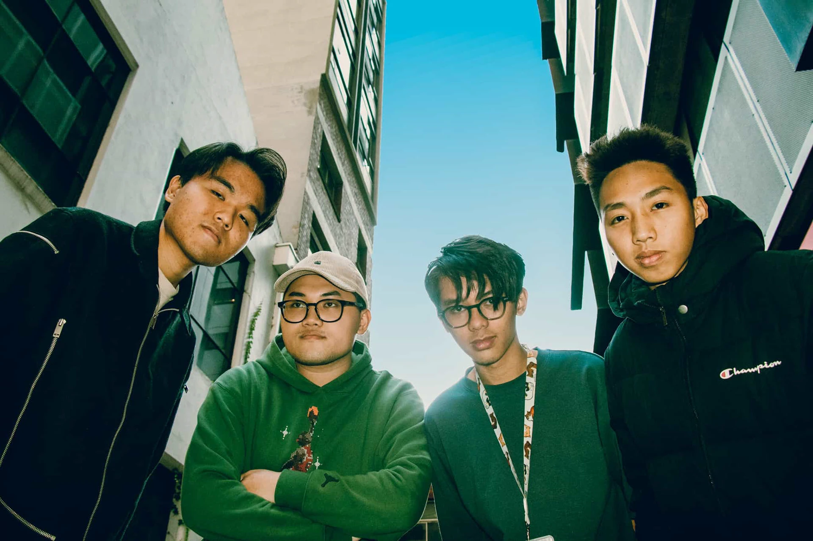

Poor Thoughts
Year:2024. Type: Short Experimental Film.
Role: 3D Artist, VFX Artist.
Role: 3D Artist, VFX Artist.
Poor Thoughts is a project I work on with two other designers Steve Phan and Peter Nguyen. Our endeavour is a narrative experiment that mostly utilises visual effects. The so-called short film tells the tale of a teenager's irrational thinking around three in the morning, which could eventually lead to a trippy experience. The work focuses on the themes of Growth, Chaos, and Evolution.
Project Credits
PRODUCED BY TEAM KEN (Steve, Peter & Tuan)
Director: Phuc Nguyen, Thai Phan, Tuan Em
Producer: Thai Phan, Phuc Nguyen, Tuan Em
DOP: Thai Phan, Phuc Nguyen, Tuan Em
Cast: Buu Nguyen, Quynh Nguyen
Production Assistant: Duy Vo
Cam Op: Thai Phan
Music Composer: DRYBONE
Gaffer: Thai Phan, Phuc Nguyen, Tuan Em
Storyboard Artist: Tuan Em, Phuc Nguyen
VFX Artist: Thai Phan, Phuc Nguyen, Tuan Em
3D Artist: Tuan Em, Thai Phan | Colorist: Thai Phan
Equipment: Thai Phan, RMIT Techpoint | DIT: Thai Phan
Editor: Thai Phan | BTS Photographer: Duy Vo, Kieu My
Sound Op: Tuan Em, Duy Vo | Sound Designer: Thai Phan
Special Thanks To Buu Nguyen, Quynh Nguyen, Karlyn Nguyen,
Duy Vo, Kieu My, Jessie Scott, Shaun Wilson, RMIT University.
PRODUCED BY TEAM KEN (Steve, Peter & Tuan)
Director: Phuc Nguyen, Thai Phan, Tuan Em
Producer: Thai Phan, Phuc Nguyen, Tuan Em
DOP: Thai Phan, Phuc Nguyen, Tuan Em
Cast: Buu Nguyen, Quynh Nguyen
Production Assistant: Duy Vo
Cam Op: Thai Phan
Music Composer: DRYBONE
Gaffer: Thai Phan, Phuc Nguyen, Tuan Em
Storyboard Artist: Tuan Em, Phuc Nguyen
VFX Artist: Thai Phan, Phuc Nguyen, Tuan Em
3D Artist: Tuan Em, Thai Phan | Colorist: Thai Phan
Equipment: Thai Phan, RMIT Techpoint | DIT: Thai Phan
Editor: Thai Phan | BTS Photographer: Duy Vo, Kieu My
Sound Op: Tuan Em, Duy Vo | Sound Designer: Thai Phan
Special Thanks To Buu Nguyen, Quynh Nguyen, Karlyn Nguyen,
Duy Vo, Kieu My, Jessie Scott, Shaun Wilson, RMIT University.
Outcomes
BTS


Storyboard
Making Of
Internet Tunnel

Distorted Memories
Love Projection
© 2025 Tuan Em. All Rights Reserved.